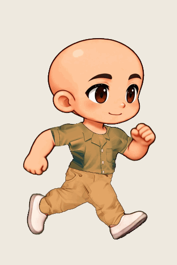
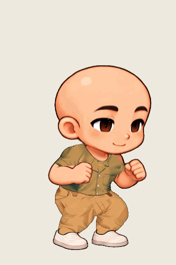
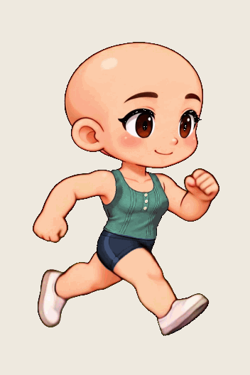
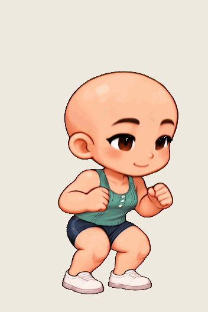
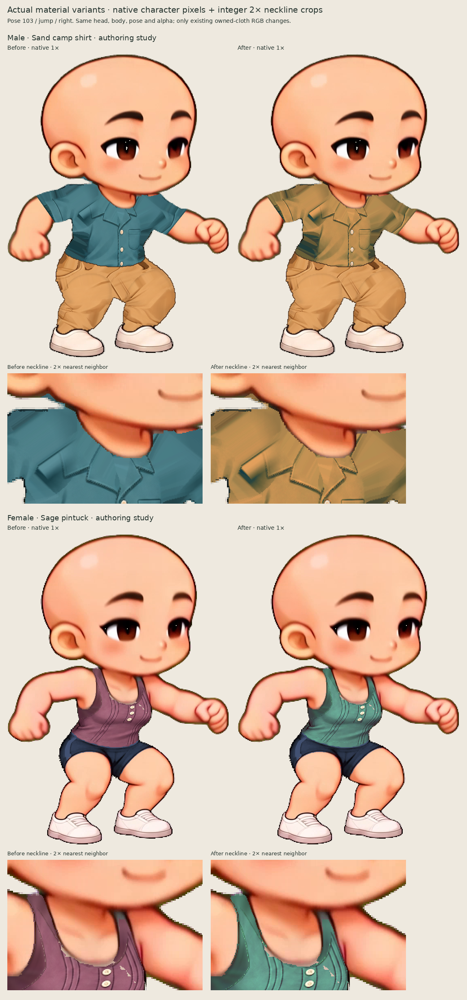
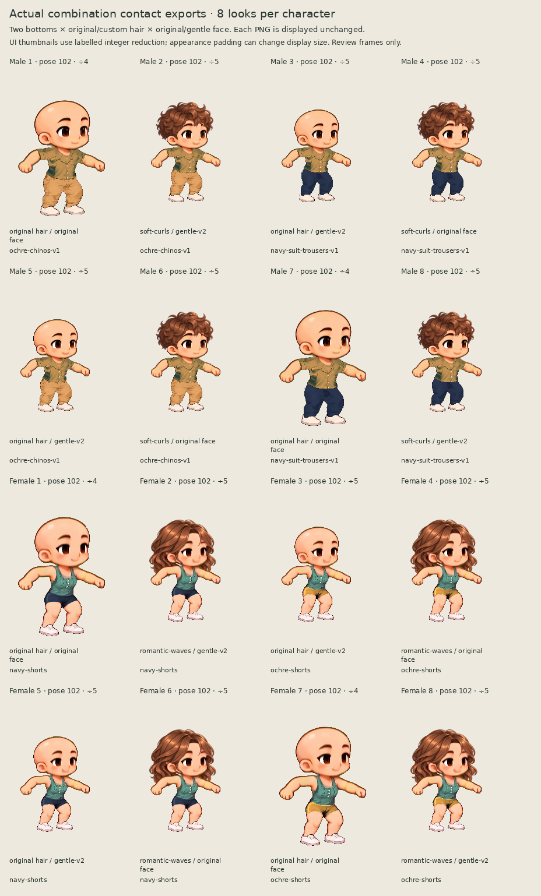

Kling clothing authoring and combination review
Two material variants made through the real clothing wizard, then inspected with the real combination checker and exported through the application.
This batch reuses existing garment shapes: sand male shirt and sage female top. It does not create new cuts or repair all neckline artifacts. Existing cool teal creases and stepped sleeve edges remain in the male material variant. The female base retains its previously reviewed partial gray-fringe limitations. Automated checks establish data and playback behavior; the recorded manual observations and actual pictures describe visual limits.
Delivery evidence index · Independent artifact audit · Reproducible gallery script · Gallery provenance
The raw capture missed observation of female jump/left position 3 during a browser sampling gap. A separately recorded native-frame check and three real-time plays cover that position; all three plays observed the full jump. The supplemental strict assertion also recorded a missing optional favicon. Both raw failure records and the exact diagnostic remain available: Original strict capture record · Native frame check and three real-time plays · Supplemental console diagnostic.
Male · run right
Byte-for-byte copy of an actual UI export; no re-encoding. This source action loops.

Male · jump right
Byte-for-byte copy of an actual UI export; no re-encoding. This source action is one-shot; open or refresh the linked GIF to replay it.

Female · run right
Byte-for-byte copy of an actual UI export; no re-encoding. This source action loops.

Female · jump right
Byte-for-byte copy of an actual UI export; no re-encoding. This source action is one-shot; open or refresh the linked GIF to replay it.

Material changes at native size, with 2× neckline detail
Offline arrangement of exact captured UI PNGs. Shared same-pose crops, alpha composited onto a neutral matte; no art edits.

Sixteen actual exported combination previews
Contact ZIP after-PNG members arranged at their original exported size, unchanged except neutral matte. The labelled integer reduction can vary with appearance padding, so these thumbnails are not a same-size anatomy comparison. No additional downsampling or rendering.

Male downloads and review trail
8/8 requested looks; 240/1952 static samples. Five actions and both directions were sampled. Uninspected frames and combinations are not visually approved.
Female downloads and review trail
8/8 requested looks; 240/1952 static samples. Five actions and both directions were sampled. Uninspected frames and combinations are not visually approved.
GIFs are unchanged actual downloads; PNG boards are labeled offline arrangements of actual exports. Original left-facing GIFs, native PNGs, contact archives and reports are linked above. Saved wardrobe reopening was exercised during capture; the large self-contained project ZIPs remained temporary and are not included. Repeating the full independent audit after cloning requires a fresh production capture.